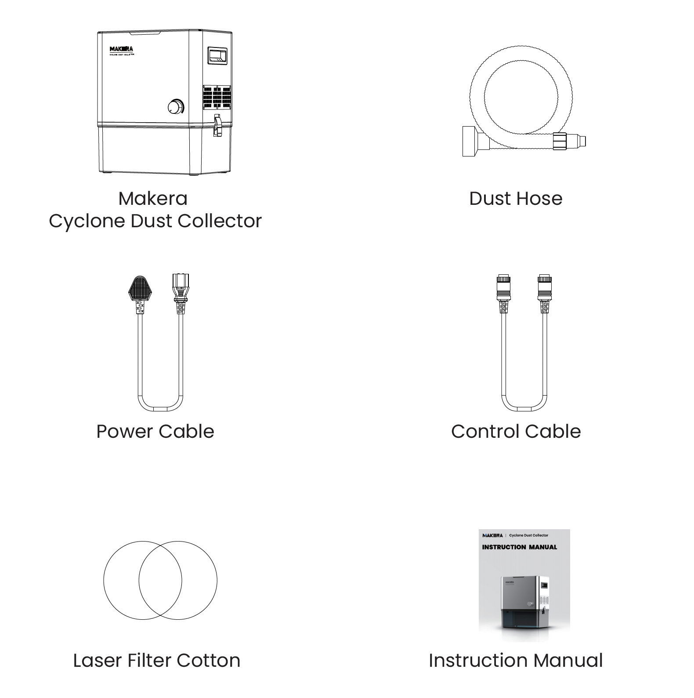
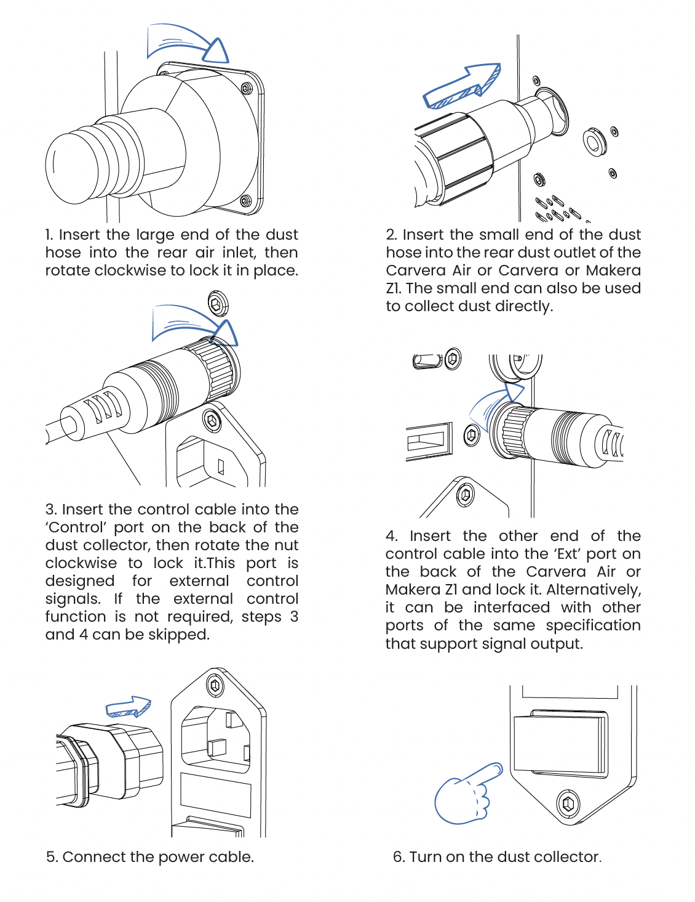
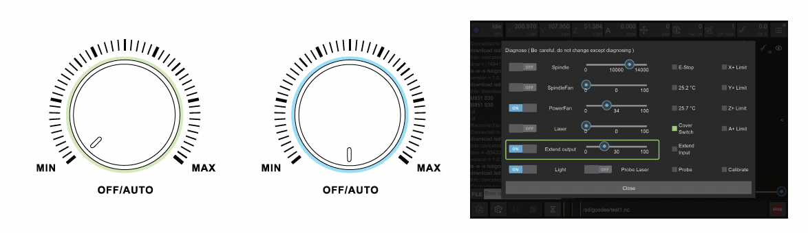
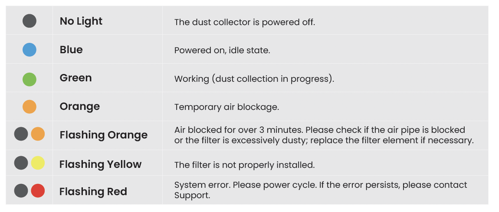
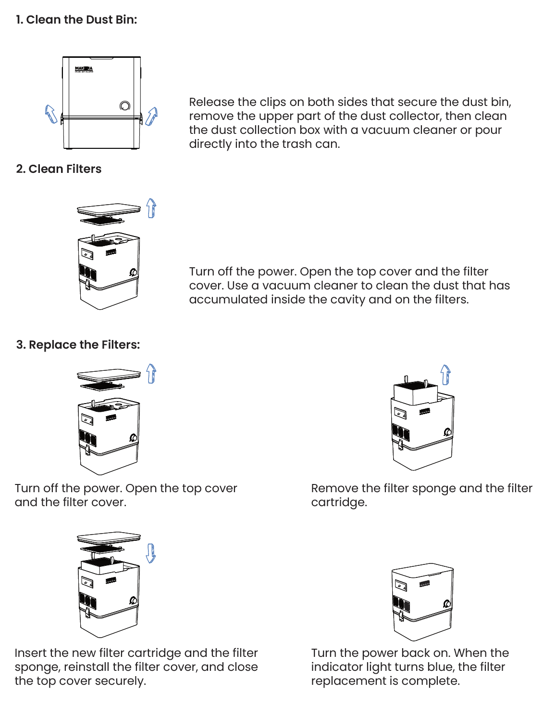
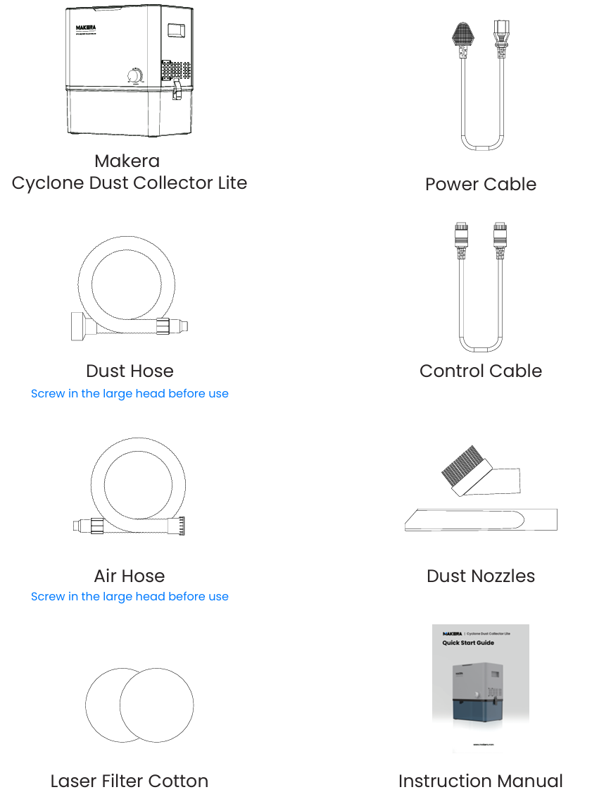
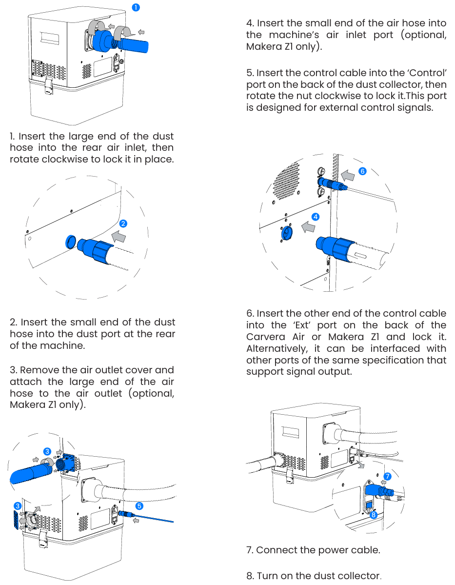
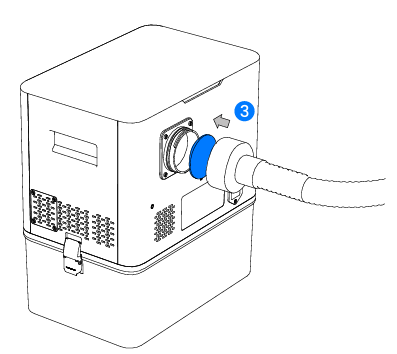
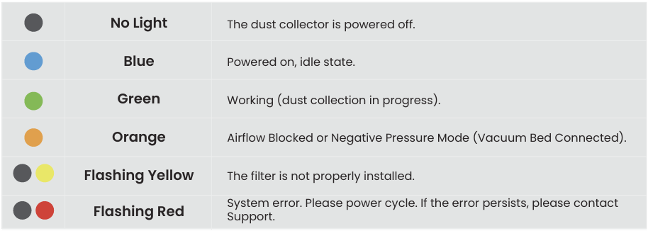
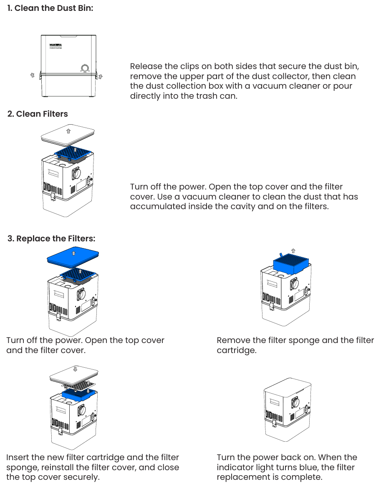

Click here to view our tutorial videos for the Makera Cyclone Dust Collector
Instruction Manual for the Makera Cyclone Dust Collector
Overview Video
Statement
FCC statement:
Any Changes or modifications not expressly approved by the party responsible for compliance could void the user's authority to operate the equipment.
This device complies with part 15 of the FCC Rules. Operation is subject to the following two conditions: (1) This device may not cause harmful interference, and (2) this device must accept any interference received, including interference that may cause undesired operation.
Note: This equipment has been tested and found to comply with the limits for a Class B digital device, pursuant to part 15 of the FCC Rules. These limits are designed to provide reasonable protection against harmful interference in a residential installation. This equipment generates, uses and can radiate radio frequency energy and, if not installed and used in accordance with the instructions, may cause harmful interference to radio communications. However, there is no guarantee that interference will not occur in a particular installation. If this equipment does cause harmful interference to radio or television reception, which can be determined by turning the equipment off and on, the user is encouraged to try to correct the interference by one or more of the following measures:
—Reorient or relocate the receiving antenna.
—Increase the separation between the equipment and receiver.
—Connect the equipment into an outlet on a circuit different from that to which the receiver is connected.
—Consult the dealer or an experienced radio/TV technician for help.
IC statement:
This product meets the applicable Innovation, Science and Economic Development Canada technical specifications.
Le présent matériel est conforme aux specifications techniques applicables d’Innovation, Sciences et Développement économique Canada.
Safety (Important)
Please read the following warnings and instructions carefully before operating the dust collector.
Usage Environment
Do not use the dust collector in high-temperature environments (above 60°C), near fire hazards, or in areas with flammable liquids or oils. Ensure proper grounding before operation. Only qualified professionals should open the rear panel for inspection or repairs, as internal components carry high voltage .
Operation Safety
Do not move or adjust filters or cyclones while the machine is running. Never touch the rotating impeller with hands or any objects. Always disconnect the power supply before cleaning or performing maintenance. Operate the dust collector only within the specified voltage range (refer to the label on the machine). Turn off and unplug the unit if the power supply is unstable.
Humidity & Maintenance
Operate within a humidity range of 40% to 80%. Exceeding this range may damage internal circuits and reduce filter efficiency. Filters come with protective packaging—remove it before use. Filters are disposable—do not wash or reuse them. Always replace them with genuine Filter Cartridge for Makera Cylcone Dust Collector. Ensure filters are properly installed before operation. Running the dust collector without filters may allow dust to enter the motor and control system, causing damage (repairs will be at your own expense).
Filter Maintenance
If filters become heavily clogged, stop using the machine immediately to avoid damage. Regularly clean and replace filters to maintain optimal performance. If filters are blocked, inefficient, or malfunctioning, replace them promptly with Filter Cartridge for Makera Cylcone Dust Collector. Follow these guidelines to ensure safe and efficient operation of your dust collector.
List of Items

Note:
▪ The power cable model may vary depending on the region.
▪ The control cable is compatible with the Carvera Air or the Makera Z1 and can not be directly connected to the Carvera at this time. We will provide an upgrade solution to enable automatic control on Carvera in the future.
Installation

Using the Cyclone Dust Collector

- Manual Mode:
- Rotate the knob clockwise to turn on the dust collector. In this mode, you can manually control the on/off status and the collection power directly via the knob.
- Automatic Mode:
- Turn the knob to the OFF/AUTO position to enable Auto Control.
- You can test the dust control function in the Diagnostics > Extend Output section in the Carvera Controller.
- Use M851 SXX in your G-code to turn on the dust collector, and M852 to turn it off. (XX represents the suction power percentage)
- Laser Engraving
- Insert the laser filter cotton into the large end of the dust hose as the first-stage fume filter. This helps extend the life of the main filter cartridge. Remember to remove it when switching back to dust collection mode.

Maintenance

Instruction Manual for the Makera Cyclone Dust Collector Lite
Overview Video
Statement
FCC statement:
Any Changes or modifications not expressly approved by the party responsible for compliance could void the user's authority to operate the equipment.
This device complies with part 15 of the FCC Rules. Operation is subject to the following two conditions: (1) This device may not cause harmful interference, and (2) this device must accept any interference received, including interference that may cause undesired operation.
Note: This equipment has been tested and found to comply with the limits for a Class B digital device, pursuant to part 15 of the FCC Rules. These limits are designed to provide reasonable protection against harmful interference in a residential installation. This equipment generates, uses and can radiate radio frequency energy and, if not installed and used in accordance with the instructions, may cause harmful interference to radio communications. However, there is no guarantee that interference will not occur in a particular installation. If this equipment does cause harmful interference to radio or television reception, which can be determined by turning the equipment off and on, the user is encouraged to try to correct the interference by one or more of the following measures:
—Reorient or relocate the receiving antenna.
—Increase the separation between the equipment and receiver.
—Connect the equipment into an outlet on a circuit different from that to which the receiver is connected.
—Consult the dealer or an experienced radio/TV technician for help.
IC statement:
This product meets the applicable Innovation, Science and Economic Development Canada technical specifications.
Le présent matériel est conforme aux specifications techniques applicables d’Innovation, Sciences et Développement économique Canada.
Safety (Important)
Please read the following warnings and instructions carefully before operating the dust collector.
Usage Environment
Do not use the dust collector in high-temperature environments (above 60°C), near fire hazards, or in areas with flammable liquids or oils. Ensure proper grounding before operation. Only qualified professionals should open the rear panel for inspection or repairs, as internal components carry high voltage .
Operation Safety
Do not move or adjust filters or cyclones while the machine is running. Never touch the rotating impeller with hands or any objects. Always disconnect the power supply before cleaning or performing maintenance. Operate the dust collector only within the specified voltage range (refer to the label on the machine). Turn off and unplug the unit if the power supply is unstable.
Humidity & Maintenance
Operate within a humidity range of 40% to 80%. Exceeding this range may damage internal circuits and reduce filter efficiency. Filters come with protective packaging—remove it before use. Filters are disposable—do not wash or reuse them. Always replace them with genuine Filter Cartridge for Makera Cylcone Dust Collector Lite. Ensure filters are properly installed before operation. Running the dust collector without filters may allow dust to enter the motor and control system, causing damage (repairs will be at your own expense).
Filter Maintenance
If filters become heavily clogged, stop using the machine immediately to avoid damage. Regularly clean and replace filters to maintain optimal performance. If filters are blocked, inefficient, or malfunctioning, replace them promptly with Filter Cartridge for Makera Cylcone Dust Collector Lite. Follow these guidelines to ensure safe and efficient operation of your dust collector.
List of Items

Note:
▪ The power cable model may vary depending on the region.
▪ The control cable is compatible with the Carvera Air or the Makera Z1 and can not be directly connected to the Carvera at this time. We will provide an upgrade solution to enable automatic control on Carvera in the future.
Installation

Using the Cyclone Dust Collector Lite
- Manual Mode:
- Rotate the knob clockwise to turn on the dust collector. In this mode, you can manually control the on/off status and the collection power directly via the knob.
- Automatic Mode:
- Turn the knob to the OFF/AUTO position to enable Auto Control.
- Use M851 SXX in your G-code to turn on the dust collector, and M852 to turn it off. (XX represents the suction power percentage)
- Laser Engraving
- Insert the laser filter cotton into the large end of the dust hose as the first-stage fume filter. This helps extend the life of the main filter cartridge. Remember to remove it when switching back to dust collection mode.

4. Indicator Light Status:

Maintenance
